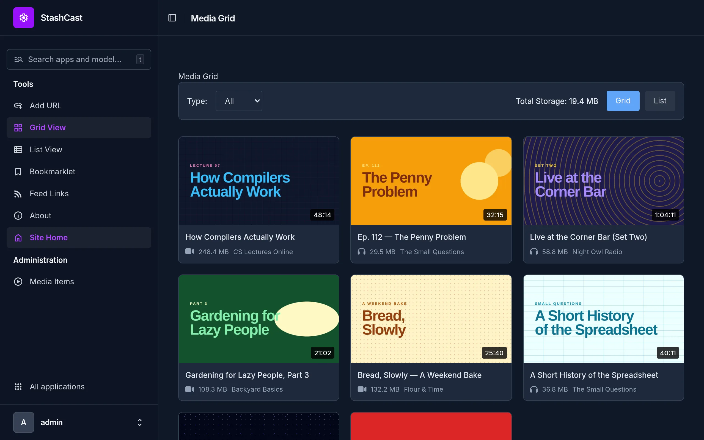
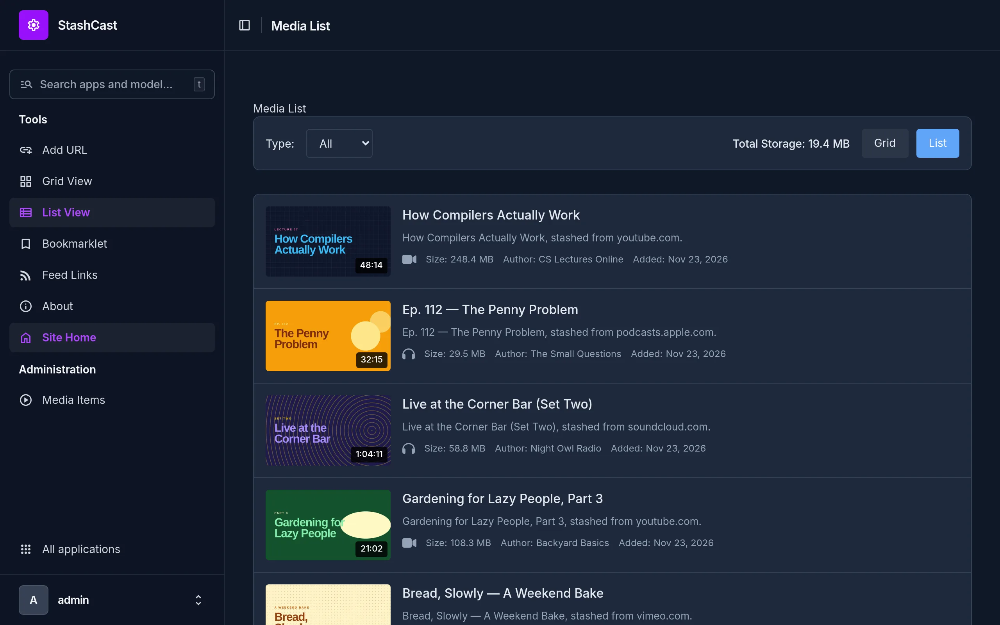
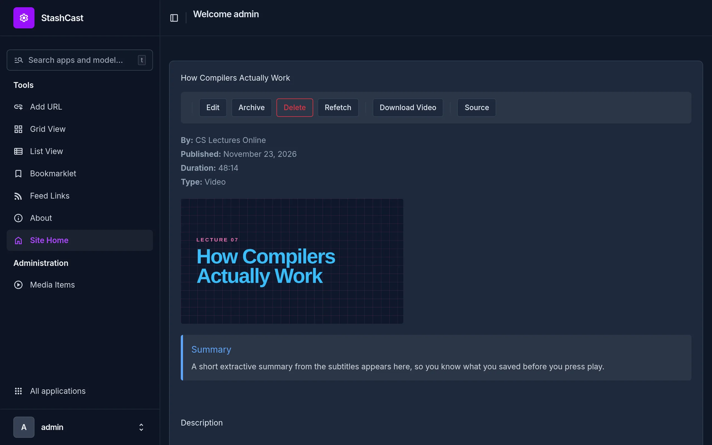
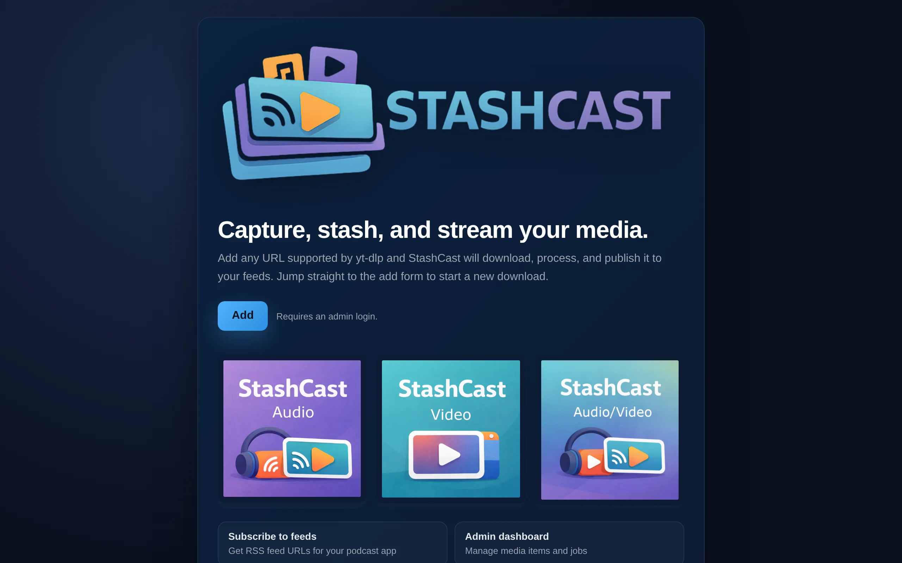
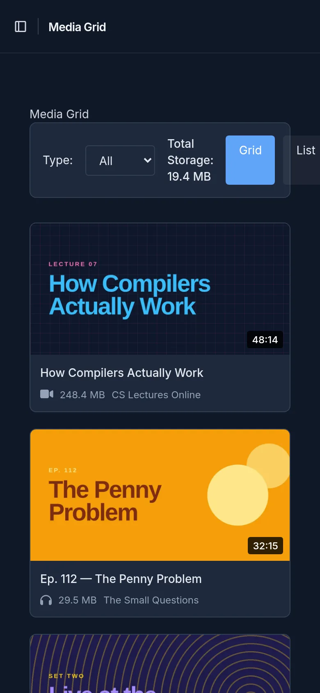

Any link.
Your podcast app.
A YouTube video, an Apple Podcasts episode, a raw MP3, a talk embedded on some conference page: StashCast downloads the one-off thing someone sent you into a private podcast feed, so you can watch or listen later, offline, in the app you already use.
Not just YouTube.
If you can open it in a browser and it plays, StashCast can probably stash it.
- Podcast episodesApple Podcasts links and episode pages: just the one episode, no subscription.
- Raw audio & video filesA direct link to an .mp3, .m4a, .mp4 or .ogg. Transcoded if you want.
- Embedded playersTalks, lectures and interviews sitting on an ordinary web page. It finds the media for you.
- Thousands of sitesYouTube, Vimeo, SoundCloud and everything else yt-dlp supports.
- Spotify linksSpotify audio is DRM-locked, so StashCast finds the same episode elsewhere and lets you pick it.
- Playlists & multi-embed pagesStash a whole playlist, or every clip on a page, in one go.
A tidy little library.
Everything you've stashed in one place, with artwork, durations, summaries and one-click refetch. It works on your phone too.





Three steps. No subscriptions.
You don't want the whole show. You want that one episode. StashCast is read-it-later for audio and video.
- 01 — SEND
Click the bookmarklet
Or call the API, or run
manage.py stash. Any page with media works. - 02 — STASH
It downloads in the background
Metadata, artwork and subtitles are fetched, with optional transcoding and summaries.
- 03 — LISTEN
It shows up in your feed
Audio, video or combined RSS feeds. Offline, with your app's speed controls.
The honest details.
Small on purpose: single user, one Django process, one worker.
Spec sheet
| Sources | Anything yt-dlp supports, direct media, HTML pages with embeds, playlists |
|---|---|
| Interfaces | Web UI, bookmarklet, HTTP API, CLI |
| Feeds | Audio, video and combined, optionally protected by a token |
| Extras | ffmpeg transcoding, subtitles, extractive summaries |
| Storage | Plain files on local disk, SQLite database |
| Languages | English · Español · Português |
Is it the right tool?
| You want to… | Use |
|---|---|
| Listen to or watch one-off media later, via an ephemeral podcast feed | StashCast ✓ |
| Download videos to your single Android device, without central control | YTDLnis, Seal |
| Auto-follow channels and playlists | TubeSync, Podsync |
| Archive media long-term | ArchiveBox, Tube Archivist |
| Save articles to read later | Savr (sister project) |
Running in a minute.
A published image for amd64 and arm64, one compose file and SQLite by default. Put it behind your reverse proxy and you're done.
# get it running $ mkdir stashcast && cd stashcast $ curl -O https://raw.githubusercontent.com/jonocodes/ $ curl -o .env https://raw.githubusercontent.com/stashcast/ main/ docker-compose.yml jonocodes/ # edit .env: set SECRET_KEY, STASHCAST_USER_TOKEN and # ALLOWED_HOSTS, and remove DEBUG=True $ docker compose up -d $ docker compose run --rm web python manage.py createsuperuser # then subscribe to this in your podcast app http://your-server:8000/stashcast/ main/ .env.example feeds/ audio.xml